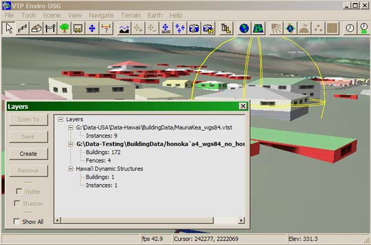

Structures in the VTP software means buildings, linear structure such as walls and fences, and instances of external 3D model files. They are contained in Structure Layers, which can be loaded and saved to VTST files. You can have any number of structure layers on each terrain.
To include structures from a VTST file, edit the properties for your terrain. Under the Culture tab, double-click Structure Files to choose from a list of all the VTST files that are located in BuildingData folders on your data path.
You can also create a new, empty Structure Layer at runtime, by pressing Create in the Layer Dialog.

Structure layers are shown in the Layers Dialog above. The active structure layer is shown in bold. The operations shown will affect the active layer. You can make any layer active by clicking on it or any of its items. You can do these operations on a structure layer:
- Zoom To: Move the camera so that the selected item in view.
- Save: Write the active layer to the VTST file which it was loaded from.
- Save As: Write the active layer to a VTST file with another name.
- Create: Create a new, empty structure layer.
- Remove: Remove a selected item from its layer.
- Visible: Toggle whether the selected item is visible.
- Shadow: Toggle whether the selected item should cast a shadow, if structure shadows are enabled for this terrain.
- Show All: When on, every single item will be shown for every layer. When off, only a summary of the items is shown, e.g. "Buildings: 172, Fences: 4". This makes the dialog much more responsive when there are a lot of items in the scene.